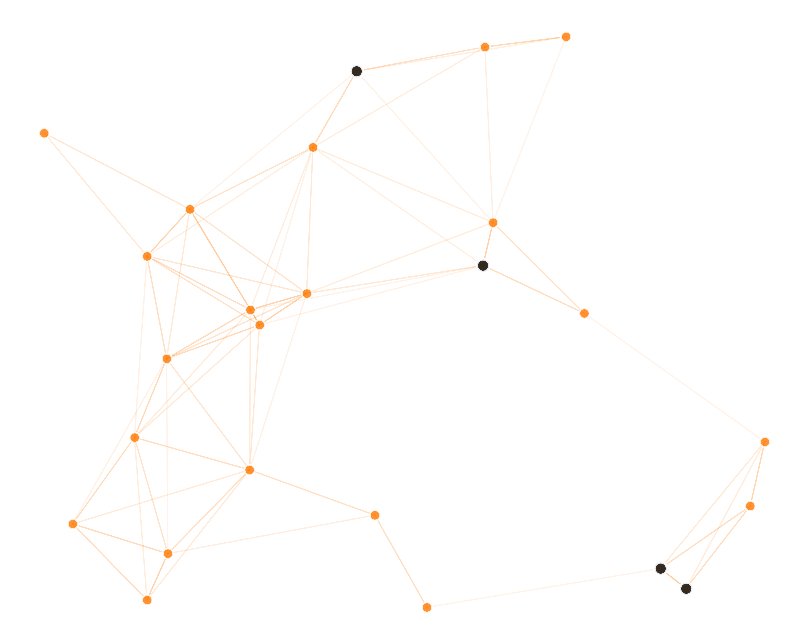
This report provides a comprehensive review of Nova Connect Egypt's Environmental, Social, and Governance (ESG) strategy, performance, and key milestones for the calendar year ended 31 December 2026.
This year's report focuses heavily on our green network evolution—replacing off-grid diesel generators with hybrid solar solutions—and our expanded digital learning hubs across rural provinces in Egypt. All mathematical trends, absolute values, and baseline comparisons have been fully checked for alignment with international reporting codes.
This report contains details of the Environmental, Social, and Governance (ESG) performance of Nova Connect Egypt S.A.E. and all of its direct subsidiaries under operating control in the Arab Republic of Egypt. The reporting period is from 1 January 2026 to 31 December 2026. Historical comparative data represents calendar years 2024 and 2025.
We prepare our disclosures in accordance with the Global Reporting Initiative (GRI) Standards (Universal Standards 2021). Furthermore, this report is mapped to the United Nations Sustainable Development Goals (SDGs) and leverages indicators inspired by the Sustainability Accounting Standards Board (SASB) for the Telecommunications Services industry. In our climate sections, we follow recommendations outlined by the Task Force on Climate-related Financial Disclosures (TCFD).
We strive to apply the highest quality reporting principles to ensure the trust and credibility of our ESG statements:
• Accuracy: Quantifying energy, emissions, and labor hours using measured data.
• Balance: Outlining both achievements and operational challenges.
• Clarity: Structuring chapters with simple terminology and clean data visualization.
• Comparability: Presenting identical baseline parameters across a 3-year timeline.
Reporting Year: 2026
Standards: GRI Standards, UN SDGs
Coverage: 100% of operations in Egypt
Assurance: Limited external assurance
Currency: Egyptian Pound (EGP)
Q1-Q2 2026: Stakeholder interviews & materiality verification.
Q3-Q4 2026: Data aggregation and mid-year tracking.
Q1-Q2 2027: External audits and assurance process.
"In 2026, we accelerated our network expansion and green transition, demonstrating that connectivity and sustainability go hand in hand. By building a green, digital infrastructure, we are securing Egypt's future."
As Egypt undergoes an unprecedented digital transformation, the responsibility on telecommunications infrastructure providers is clearer than ever. Digital connectivity is no longer just a driver of convenience; it is the vital foundation of modern economic development, quality education, healthcare, and social equity.
At Nova Connect Egypt, our vision is built on three core ideas: connecting the unconnected, minimizing our impact on the environment, and running our business with absolute compliance and integrity. Over the past year, we have made outstanding progress in reducing Scope 1 and 2 emissions and expanding our digital learning networks to rural provinces across Egypt.
Mariam Hassan
Chief Executive Officer
In 2026, we achieved a significant operational milestone by reaching 54% renewable energy integration across our network. This was accomplished by replacing off-grid diesel generators with hybrid solar solutions in rural towers, combined with purchasing clean energy contracts for our urban switching centers. This green transition has driven a 14% absolute reduction in our total carbon footprint, proving that telecommunication services can expand without increasing ecological harm.
Moreover, we launched our circular economy initiative, "From Old Devices to New Value". Through this program, we recycled over 84,000 mobile phones and network devices, preventing toxic electronic waste from reaching landfills and recovering precious raw materials.
Digital inclusion remains our primary vehicle for community empowerment. We expanded our Digital Learning Centers across rural provinces in Upper Egypt and the Delta region. These facilities provide critical IT skills, digital literacy, and internet access to communities that previously lacked basic connection infrastructure.
Through our affordable connectivity and specialized services, we served 184,000 digital inclusion beneficiaries in 2026. This represents a 27% increase compared to 2025. We believe that true digital transformation is only successful if it includes everyone, which is why we continue to expand our network coverage in rural communities.
Underpinning our social and environmental goals is a rigorous commitment to corporate governance. We completed cybersecurity and data privacy audits for all our operations. 100% of our office and retail staff completed compliance training. By ensuring transparency, ethical data management, and secure transactions, we maintain the trust of our 18.6 million subscribers.
Looking ahead, we will continue to invest in energy efficiency, network expansion, and employee wellbeing. I want to express my gratitude to our board, partners, and employees for their commitment. Together, we are building a digital, sustainable future for Egypt.
• Reaching 60% renewable energy integration.
• Deploying an additional 50 solar-powered rural towers.
• Expanding our digital inclusion programs to target 250,000 beneficiaries.
Founded in 2005, Nova Connect Egypt has grown to become a cornerstone of the nation's telecommunications landscape. We provide voice, high-speed mobile data, fiber broadband, cloud enterprise solutions, and digital financial services to over 18.6 million subscribers. Headquartered in Cairo, our footprint spans all 27 governorates of Egypt.
Our business model is built around driving digital accessibility and innovation. We serve three key customer segments:
• Consumers: Providing reliable voice, 4G/5G mobile broadband, and high-speed home fiber networks.
• Enterprise: Supporting Egyptian small, medium, and large corporations with dedicated internet, secure cloud hosting, and IoT automation systems.
• Public Sector: Partnering with national entities to build secure data networks and digital public infrastructure.
Through our digital wallet platform, NovaCash, we provide digital payment services to millions of unbanked and underbanked citizens across Egypt, facilitating financial inclusion and supporting the cash-lite national economy.
To provide high-quality, inclusive digital connectivity that empowers individuals, supports business growth, and drives sustainable environmental and social development across Egypt.
Our corporate identity is built around bold innovation and trust. The primary orange branding represents energy, accessibility, and communication, while the dark charcoal highlights structure, governance, and operational resilience.
The strength of Nova Connect Egypt lies in our modern physical network. Over the last decade, we have made major investments to build a high-performance network that reaches the most remote areas of the country. In 2026, we expanded our total network coverage to 98.7% of the population, ensuring reliable communications for residential and business users alike.
Our 4G infrastructure now covers 97.5% of the population, while our high-speed 5G network, which began roll-out in major metropolitan centers, has reached 72% coverage. This advanced 5G network supports high-speed data transmission and low latency, enabling industrial automation and advanced digital services.
We are actively transitioning our network infrastructure to be environmentally sustainable. This includes:
• Deploying solar-hybrid power units to rural base stations.
• Upgrading our metropolitan server farms with high-efficiency cooling.
• Sharing network towers with industry peers to minimize raw material usage and footprint.
Our fiber optic network now spans thousands of kilometers, connecting metropolitan areas with rural provinces. This enables high-speed data backhaul, supporting local businesses and enabling our digital learning centers to function with high-speed internet.
With 145 service centers and a digital customer support system, we ensure that technical queries, billing adjustments, and subscriber services are managed with speed and transparency.
Our scale and reach in numbers. These figures show the footprint and financial resilience of Nova Connect Egypt, which supports our extensive ESG investments.
Nova Connect Egypt aligns its infrastructure expansion and service offering with the sustainable development priorities of the Egyptian government. Our network deployment directly supports the digitization of public services, financial inclusion initiatives, and clean energy transition programs, serving as an accelerator for Egypt's Vision 2030 framework.
At Nova Connect Egypt, our sustainability roadmap is integrated directly into our corporate strategy. Rather than viewing sustainability as a separate compliance activity, we structure our business operations around three pillars: Environment, Social, and Governance (ESG).
This approach ensures that our network investments, community development, and governance structures work together to deliver shared value for shareholders, employees, customers, and society.
We focus on decoupling network growth from resource consumption and carbon emissions. Our key environmental priorities include transition to renewable energy sources, network energy efficiency upgrades, water footprint optimization, and implementing circular economy practices for electronic waste.
Our social initiatives focus on bridging the digital divide and empowering communities. We support digital inclusion through rural infrastructure, local community investments, and providing IT skills training. Internally, we prioritize employee health and safety, professional development, and maintaining diversity and inclusion across all tiers of leadership.
Ethics, data privacy, and compliance form the foundation of our business. We ensure robust risk management, transparent reporting, strict data protection, cybersecurity resilience, and a responsible supply chain that enforces ESG compliance among our partners.
Our ESG strategy is overseen directly by the Board's dedicated Sustainability and Risk Committee. This ensures that environmental performance, cyber risk, compliance, and social investments are reviewed quarterly at the executive level.
A structured visualization of our priorities, targets, and key metrics across the three ESG pillars.
To ensure our report focuses on topics of greatest impact, we conduct a structured materiality assessment every two years. This process is designed to align with the GRI Materiality Principles, evaluating topics based on both their impact on society and the environment, and their relevance to business strategy and financial performance.
Our assessment follows 7 steps:
1. Stakeholder identification: Mapping our key stakeholder groups.
2. Stakeholder engagement: Surveys and interviews with stakeholders.
3. Topic identification: Aggregating standard ESG topics.
4. Impact assessment: Outlining social/environmental impact.
5. Business relevance: Analyzing economic implications.
6. Prioritization: Scoring and sorting topics.
7. Management validation: Executive committee sign-off.
We engage with 8 primary stakeholder groups:
• Employees, Customers, and Investors
• Regulators, Suppliers, and Communities
• NGOs and Business partners
Our analysis identified 12 key material topics grouped into priorities. The highest priority topics require active management and detailed disclosure:
• Cybersecurity & Data Privacy: High importance due to expanding cloud networks and financial services.
• Climate Change & Energy: Driven by energy costs and grid transition.
• Digital Inclusion: Crucial for rural communities and social license.
• Business Ethics: The foundation of all compliance operations.
In 2026, we collected feedback from over 2,400 survey respondents, including employees, customers, and retail partners. Their feedback directly shaped the focus of our environmental and digital training programs.
The chart below visualizes the 12 material topics mapped by stakeholder importance and impact on business. Topics in the top-right orange quadrant represent our critical ESG priority areas.
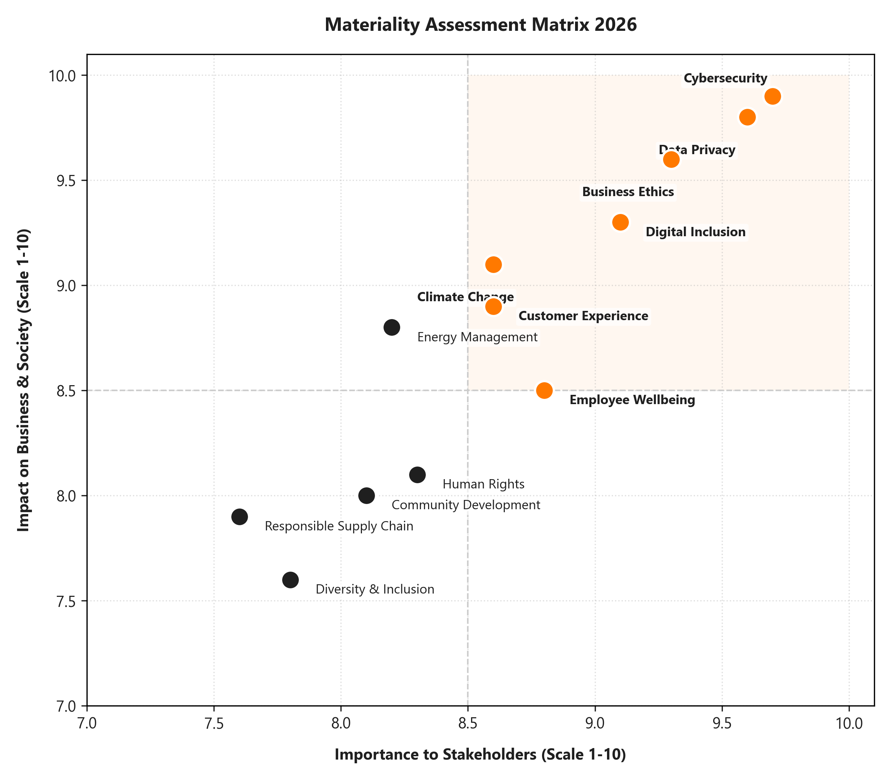
We map our ESG initiatives directly to the United Nations Sustainable Development Goals, focusing on the 9 goals where Nova Connect Egypt has the greatest impact.
An overview of our key ESG indicators for 2026, showing performance figures and progress compared to our 2025 values.
Performance Summary: We achieved positive trends across all twelve key indicators in 2026. Environmental indicators like carbon, energy, and water decreased due to operational improvements. Social and governance indicators showed growth, highlighting our expanded community programs and cyber compliance.
At Nova Connect Egypt, our corporate governance framework is designed to promote long-term value creation, transparent oversight, and accountability to stakeholders. The Board of Directors sits at the center of this framework, providing strategic direction and risk management guidance.
In 2026, our Board consisted of 11 members, with a composition focused on diversity, independent oversight, and sector expertise:
• Independent Directors: 5 out of 11 members are independent non-executives, exceeding local corporate governance requirements.
• Board Meetings: The Board convened 8 times during the fiscal year 2026, with an overall attendance rate of 97%.
• Committees: Four dedicated Board committees support targeted oversight: the Audit Committee, the Remuneration Committee, the Nomination Committee, and the Sustainability & Risk Committee.
We believe that cognitive diversity improves Board decision-making. Women represent 27% of our Board seats. The Audit and Sustainability Committees are chaired by independent directors to ensure neutral, transparent review.
Established in 2024, the Sustainability & Risk Committee oversees climate risk assessment, emissions reductions, health and safety, cyber threat exposure, and social investment budgets, meeting quarterly.
Our reputation is our most valuable asset. Nova Connect Egypt enforces a zero-tolerance policy toward bribery, corruption, and anti-competitive behavior. Our corporate compliance framework is built on our Code of Conduct, which is signed by all employees, directors, and consultants.
Key components of our compliance program include:
• Ethics Training: In 2026, 98% of employees completed our mandatory annual compliance and ethics training program.
• Whistleblowing Channels: We operate secure, anonymous hotlines and web portals, managed by an independent third party, to report potential violations.
• Whistleblower Protection: Our policies prohibit retaliation against any employee reporting in good faith.
In 2026, we received 34 reports through our whistleblowing channels. All reports were investigated by our Internal Audit team, and 32 cases were resolved before year-end, leading to 5 contract terminations and policy updates.
All operations, including sales agents, retail branches, and supplier contracts, are audited annually for compliance risks. No legal cases regarding corruption or anti-competitive behavior were brought against Nova Connect Egypt in 2026.
In an increasingly digital economy, data privacy and cybersecurity are critical risk areas. Nova Connect Egypt manages data in accordance with the Egyptian Data Protection Law (Law No. 151 of 2020) and aligns its processes with GDPR best practices for international transactions.
Our data privacy framework includes:
• Privacy Officer (DPO): A dedicated Data Protection Officer oversees compliance and incident reviews.
• Sub-processor Audits: We evaluate all cloud providers and vendors for compliance.
• Cybersecurity Training: In 2026, we achieved a 100% completion rate for cybersecurity training among office and retail staff.
Our systems are protected by a 24/7 Security Operations Center (SOC). Our core systems are certified under ISO 27001 for information security management. In 2026, we did not experience any major customer data breaches or security incidents that disrupted service.
Our NovaCash financial services utilize multi-factor authentication, end-to-end transaction encryption, and real-time fraud monitoring, keeping customer accounts secure.
Our impact extends beyond our direct operations. Nova Connect Egypt works with a network of over 420 active suppliers, ranging from international equipment manufacturers to local construction and security services. We require all partners to adhere to our Supplier Code of Conduct.
Our supply chain monitoring includes:
• Supplier ESG Screening: In 2026, 87% of active suppliers were screened for environmental and social criteria.
• Human Rights Screening: Evaluating labor practices, safety measures, and child labor prohibitions, particularly for field installation contractors.
• Local Sourcing: 64% of our procurement budget was spent on local Egyptian businesses, supporting domestic job creation.
Our procurement team conducts audits for high-risk contractors. In 2026, we audited 45 key suppliers. 5 suppliers were required to implement corrective safety plans, and 1 contract was terminated due to repeated safety non-compliance.
We target screening 95% of active suppliers for environmental and social criteria by 2028, and requiring all Tier-1 suppliers to report energy and emissions data.
The table below details our governance, ethics, privacy, and supply chain performance indicators over the past three reporting years.
| Governance Metric | Unit | 2024 | 2025 | 2026 | YoY Direction |
|---|---|---|---|---|---|
| Board of Directors | Count | 11 | 11 | 11 | → Stable |
| Independent Board Directors | Count | 4 | 5 | 5 | → Stable |
| Board Gender Diversity (Women) | % | 18% | 27% | 27% | → Stable |
| Board Meetings Held | Count | 7 | 8 | 8 | → Stable |
| Ethics Training Completion Rate | % | 92% | 95% | 98% | ↑ Improvement |
| Whistleblowing Cases Logged | Count | 28 | 31 | 34 | - |
| Whistleblowing Cases Resolved | Count | 27 | 29 | 32 | ↑ Improvement |
| Data Privacy Breaches | Count | 0 | 0 | 0 | → Stable |
| Cybersecurity Staff Training | % | 95% | 98% | 100% | ↑ Improvement |
| Suppliers Screened for ESG | % | 68% | 78% | 87% | ↑ Improvement |
| Local Procurement Share | % | 58% | 61% | 64% | ↑ Improvement |
At Nova Connect Egypt, we believe that access to the digital economy is a fundamental right. Through our digital inclusion strategy, we work to lower the barriers of distance and cost, enabling rural communities, women, youth, and people with disabilities to access communication resources.
Our digital inclusion activities cover five main areas:
• Digital Learning Centers: Deploying physical training labs equipped with high-speed internet and computers in rural areas.
• Digital Skills Training: Partnering with local NGOs to teach basic digital literacy, coding, and online business management.
• Affordable Data Packages: Providing low-cost connectivity rates for students and low-income families.
• Specialized Services: Creating accessible customer portals for people with disabilities.
• Rural Infrastructure: Expanding network coverage to remote locations in Upper Egypt.
In 2026, we expanded our programs, reaching 184,000 digital inclusion beneficiaries—representing a 27% growth over 2025. This includes 76,500 training participants and expanded services for people with disabilities.
Many remote villages in the Sohag and Qena governorates lacked high-speed telecommunications infrastructure. The absence of reliable networks restricted local access to digital banking, online schooling, and telemedicine, widening the rural-urban digital divide.
Nova Connect Egypt launched the Rural Connectivity Initiative to deploy solar-powered cellular towers in remote villages. Alongside infrastructure, we partnered with local communities to open Digital Learning Centers, providing free computer and internet access.
By December 2026, the program successfully connected 320 rural communities, providing high-speed mobile data to over 184,000 residents and supporting local schools and digital banking services.
Nova Connect Egypt is committed to supporting social development. Our corporate social responsibility (CSR) strategy focuses on healthcare, quality education, youth entrepreneurship, and digital literacy. We design our social programs to deliver measurable outcomes aligned with local development priorities.
Our community investment pillars include:
• Education: Modernizing local public schools and providing digital classrooms.
• Healthcare: Connecting rural clinics with high-speed internet for telemedicine.
• Youth & Startups: Providing business mentoring, tech tools, and seed funding for digital startups.
• Volunteerism: Encouraging employee participation in community development programs.
In 2026, our community investments reached EGP 96 million, representing a 12% growth compared to 2025. Our programs served 412,000 community beneficiaries, supported 52 digital startups, and engaged employees in 31,400 volunteer hours.
The chart below details our EGP 96 million community investment portfolio for 2026, showing the allocation of capital across our five focus areas.
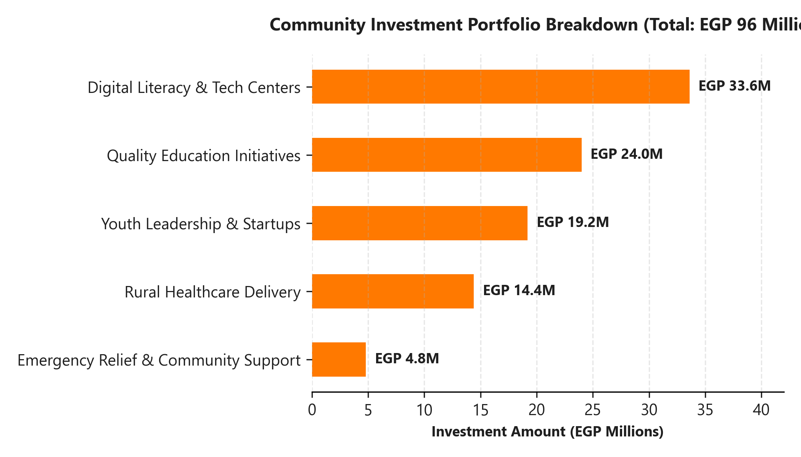
Investment Strategy: Digital literacy and IT classroom support represent our largest spending area (35%), followed by investments in public education networks (25%) and youth startup incubators (20%).
Brief summaries of our targeted community development programs implemented during 2026.
In 2026, we launched our Nova Digital Accelerator program, providing funding, cloud resources, and mentorship to tech startups. Through this initiative, we supported 52 early-stage startups in Cairo, Giza, and Alexandria, helping young entrepreneurs build digital business solutions.
We partnered with the Ministry of Health to connect remote medical clinics in the Fayoum and Minya governorates with high-speed fiber internet. This connectivity allows local doctors to consult with specialists in Cairo, bringing quality medical advice to rural areas.
At Nova Connect Egypt, our people are the core driver of our success. We employ a workforce of 4,850 professionals across our retail centers, corporate headquarters, and field operations. We focus on providing a secure, inclusive work environment that supports talent development and engagement.
Our workforce management strategy focuses on:
• Talent Development: Supporting employee career progression and technical training.
• Equal Opportunity: Enforcing fair labor standards and zero tolerance for discrimination.
• Employee Engagement: Conducting quarterly feedback surveys to monitor workplace satisfaction.
• Retention: Providing competitive compensation, health benefits, and flexible work plans.
In 2026, we achieved an employee engagement score of 87%. Our voluntary employee turnover rate was 8.2%, reflecting our positive workplace environment. Women represent 43% of our workforce, and 38% of our leadership positions.
Nova Connect Egypt believes that a diverse workforce drives innovation. We support an inclusive environment where all employees are treated with respect, regardless of gender, physical ability, or background.
Our diversity and inclusion priorities focus on:
• Gender Representation: Supporting female representation in STEM and tech-focused roles.
• Women in Leadership: Providing leadership programs and mentorship for women managers.
• Workplace Accessibility: Ensuring all retail stores and offices are accessible for people with disabilities.
• Inclusive Hiring: Partnering with local universities to recruit young professionals from diverse backgrounds.
In 2026, employees with disabilities represented 2.7% of our workforce, and we are working to increase this share to 4% by 2028 through accessible facility upgrades and targeted recruitment.
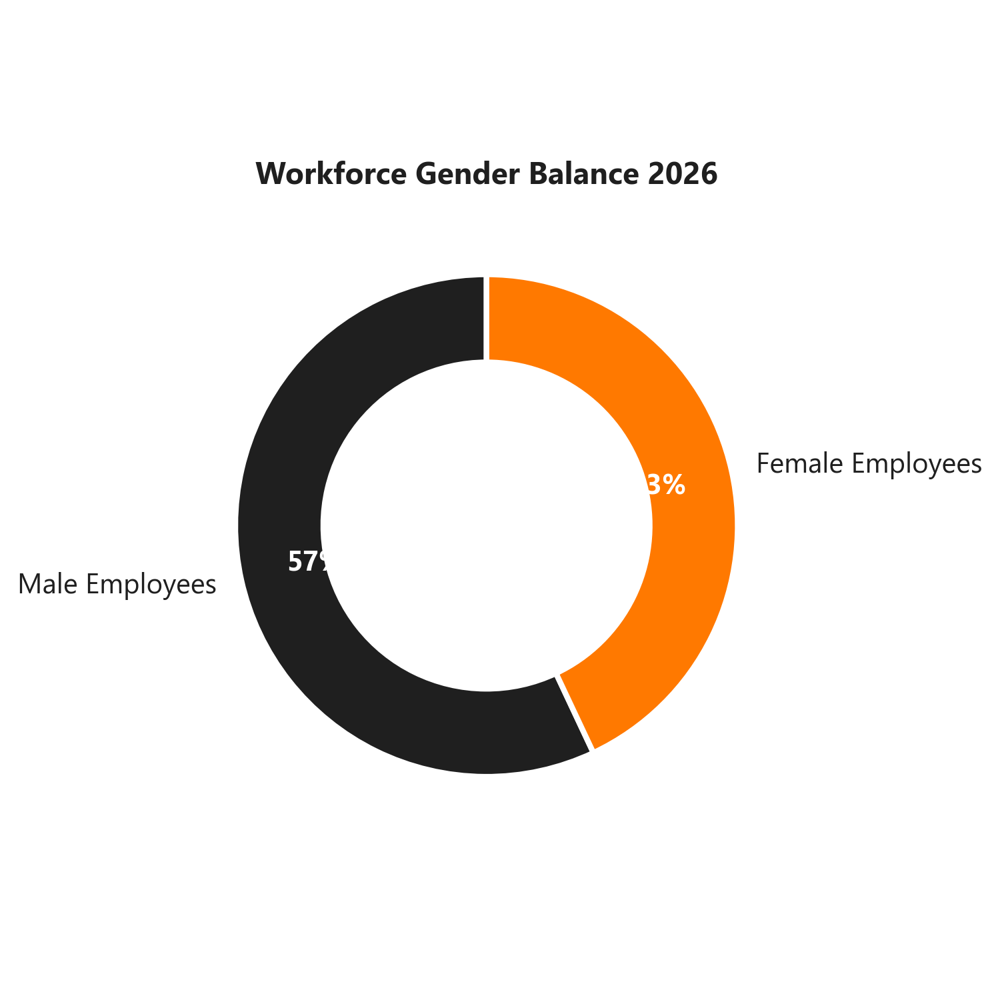
We target increasing women in leadership roles (manager level and above) to 45% by 2030, supported by our Women in Tech development program.
As digital services evolve rapidly, we prioritize continuous learning for our employees. Nova Connect Egypt operates the Nova Training Portal, providing technical, leadership, and soft-skills modules.
Our learning and development programs include:
• Technical Training: Cloud network certifications, cybersecurity, and data analysis.
• Leadership Programs: Executive mentoring and strategic planning courses.
• Compliance & Safety: Regular ethics and field safety programs.
• Tuition Assistance: Support for employees pursuing relevant degrees.
In 2026, our employees completed a total of 72,500 training hours, representing an 18% increase compared to 2025. This equates to an average of 22.4 training hours per employee.
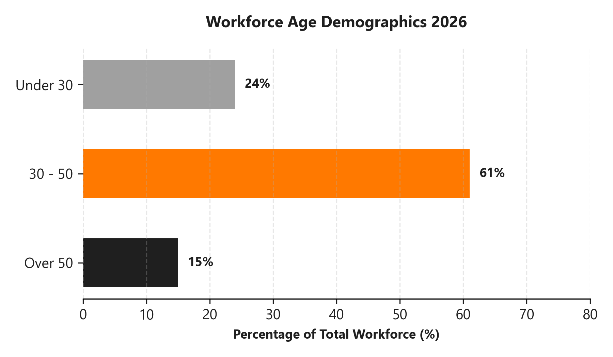
Our workforce age distribution shows a strong presence of mid-career professionals aged 30-50 (61%), balanced by entry-level talent under 30 (24%), supporting long-term continuity.
Nova Connect Egypt prioritizes a safe, healthy workplace for all employees and contractors. Our Occupational Health and Safety (OHS) management system aligns with international standard guidelines, with a strong focus on field technical operations and network installation teams.
Our OHS program includes:
• Field Safety Audits: Regular risk assessments for base station climbers and fiber installation teams.
• Personal Protective Equipment (PPE): Enforcing strict equipment standards for technical personnel.
• Safety Training: Mandatory safety programs for all field contractors.
• Wellbeing Initiatives: Providing medical health insurance, counseling, and wellness resources.
In 2026, we achieved a safety training completion rate of 99% among field employees. We recorded 7 lost-time injury incidents and achieved zero fatalities, which remains our primary target.
Lost-Time Injuries: 7
Fatalities: 0
Safety Training Completion: 99%
The table below details our human resources, diversity, learning, and safety indicators over the past three reporting years.
| Human Resources Metric | Unit | 2024 | 2025 | 2026 | YoY Direction |
|---|---|---|---|---|---|
| Total Employees (FTE) | Count | 4,520 | 4,710 | 4,850 | - |
| Women in Total Workforce | % | 38% | 40% | 43% | ↑ Improvement |
| Women in Management Roles | % | 32% | 35% | 38% | ↑ Improvement |
| Employees with Disabilities | % | 2.2% | 2.5% | 2.7% | ↑ Improvement |
| Average Training Hours per Employee | Hours | 18.5 | 20.2 | 22.4 | ↑ Improvement |
| Total Training Investment | EGP M | 12.4 | 14.8 | 17.2 | ↑ Improvement |
| Employee Engagement Score | % | 83% | 85% | 87% | ↑ Improvement |
| Voluntary Employee Turnover Rate | % | 9.1% | 8.6% | 8.2% | ↑ Improvement |
| Lost-Time Injuries (LTIs) | Count | 9 | 8 | 7 | ↑ Improvement |
| Work-Related Fatalities | Count | 0 | 0 | 0 | → Stable |
| Safety Training Completion Rate | % | 96% | 98% | 99% | ↑ Improvement |
As a leading telecommunications company, Nova Connect Egypt recognizes that expanding digital networks can impact the environment. We are committed to minimizing our ecological footprint by managing our operations responsibly and adhering to strict environmental standards.
Our environmental policy focuses on five main areas:
• Carbon Reductions: Actively transitioning our operations and supply chain to lower emissions.
• Energy Efficiency: Deploying high-efficiency cooling and smart network automation to limit energy use.
• Renewable Energy: Integrating solar-hybrid generators and local clean energy contracts.
• Water Stewardship: Restricting water consumption and reusing water in administrative buildings.
• Circular Economy: Recycling electronic waste and network devices.
Our operations are managed under the ISO 14001 environmental standard framework. We perform annual third-party audits to monitor compliance, track energy and resource usage, and verify our environmental indicators.
Energy consumption is our largest environmental footprint and operational cost area, driven by our switching centers and base towers. Nova Connect Egypt focuses on active energy management to improve network power efficiency.
Key energy efficiency programs include:
• Network Modernization: Replacing legacy network transmitters with high-efficiency hardware.
• Smart Cooling Systems: Deploying heat-exchange cooling in switching hubs to limit air conditioning power.
• Power Sleep Modes: Activating automatic transmitter sleep cycles during low-traffic night hours.
• Peer Tower Sharing: Collaborating with other network operators to share base tower footprints.
Our energy consumption in 2026 was 412,000 MWh—representing a 7% reduction compared to 2025. Our energy intensity decreased to 0.41 MWh per Terabyte (TB) of data traffic, demonstrating improved operational efficiency.
Total Energy: 412,000 MWh
Renewable Energy Share: 54%
Energy Intensity: 0.41 MWh / TB
Energy Reduction: 7% absolute decrease
We target integrating 70% renewable energy across our entire network by 2030, supported by our ongoing transition to solar-hybrid towers in rural locations.
The chart below displays our 3-year energy consumption trend, illustrating a decreasing total power consumption alongside a growing share of renewable energy.
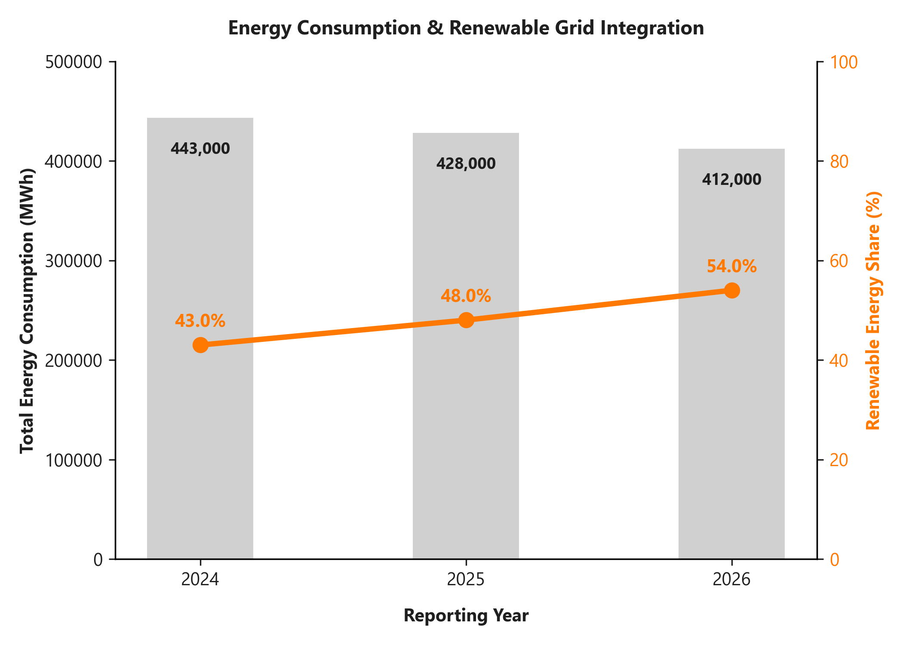
Nova Connect Egypt supports global decarbonization targets and aligns its climate initiatives with the recommendations of the Task Force on Climate-related Financial Disclosures (TCFD).
We monitor our carbon emissions across three scopes:
• Scope 1 (Direct Emissions): Driven by diesel fuel consumed in off-grid towers and our corporate vehicle fleet. In 2026, Scope 1 emissions were 42,000 tCO₂e.
• Scope 2 (Indirect Emissions): Generated from purchased electricity for our switching hubs and office buildings. In 2026, Scope 2 emissions were 98,000 tCO₂e.
• Scope 3 (Value Chain): Generated from supplier operations, transport, and waste. In 2026, Scope 3 emissions were 46,400 tCO₂e.
In 2026, our total carbon emissions were 186,400 tCO₂e, representing a 14% absolute reduction compared to 2025. This decrease was driven by our solar-hybrid tower program and carbon reduction contracts.
Scope 1: 42,000 tCO₂e
Scope 2: 98,000 tCO₂e
Scope 3: 46,400 tCO₂e
Total GHG: 186,400 tCO₂e (↓ 14% YoY)
• Replacing diesel with solar-hybrid systems in 115 towers.
• Upgrading server cooling systems to reduce electricity usage.
• Sourcing local procurement to limit transportation distances.
The charts below illustrate our greenhouse gas emissions performance: a 3-year stacked bar chart showing emissions reductions and a donut chart detailing our 2026 emissions breakdown.
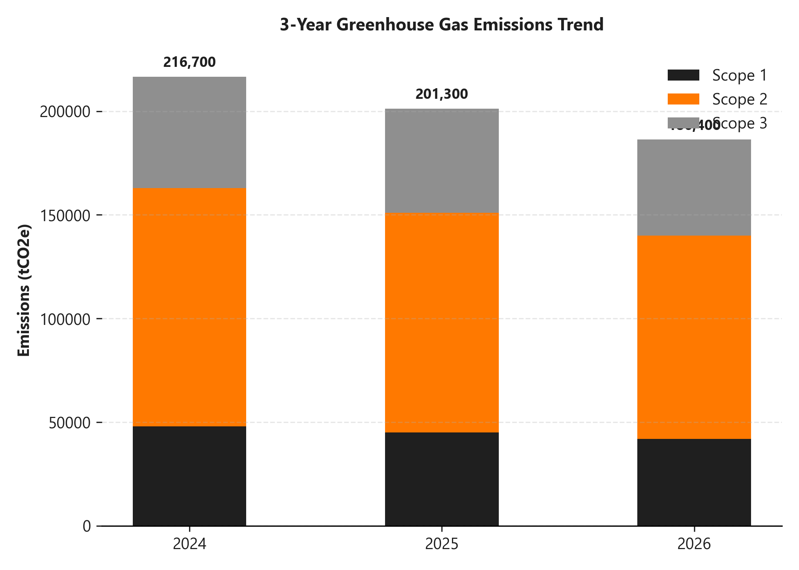
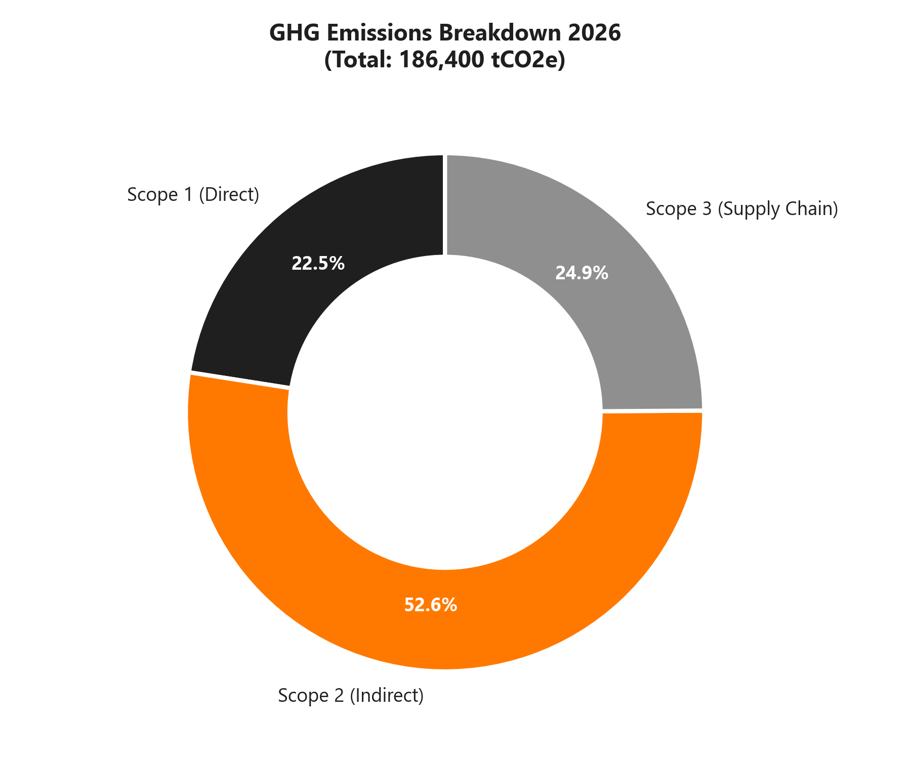
Our long-term targets on our path to achieving Net-Zero greenhouse gas emissions by 2050.
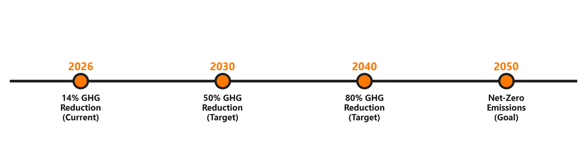
Scope 1 and 2 emissions reduction from our 2024 baseline, supported by 70% renewable energy integration.
Decarbonization of our supply chain and requiring key supplier partners to adopt carbon targets.
Achieving net-zero emissions across all scopes, utilizing approved carbon offsets for remaining emissions.
Water scarcity is a critical challenge in Egypt. Nova Connect Egypt works to minimize water consumption across our operations. While telecommunications is not a highly water-intensive sector, we manage water use in our corporate and retail offices.
Our water conservation initiatives focus on:
• Low-Flow Plumbing: Installing efficient bathroom fixtures across our service centers.
• Rainwater Collection: Capturing rainwater for landscape irrigation at our Cairo headquarters.
• Graywater Recycling: Treatment systems to reuse sink and cooling water for landscaping.
• Employee Awareness: Promoting water conservation practices among our office staff.
In 2026, our total water consumption was 96,000 m³—representing a 5% reduction compared to 2025. We achieved a water recycling and reuse rate of 22% (21,500 m³), supporting conservation goals.
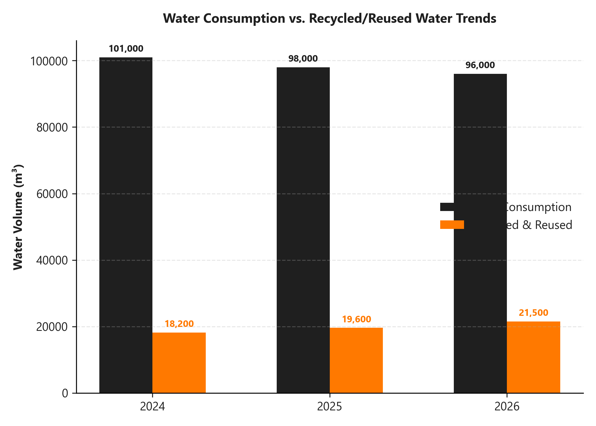
Electronic waste (e-waste) is a growing environmental challenge for the telecommunications sector. Nova Connect Egypt is committed to circular economy practices, working to recycle materials, recover resources, and divert waste from landfills.
Our waste management initiatives focus on:
• Network Equipment Recycling: Dismantling decommissioned copper cables and steel rack systems for industrial recycling.
• Consumer Device Recovery: Implementing trade-in options for old smartphones and accessories.
• Office & Retail Recycling: Standard recycling bins for paper, plastics, and metals.
• Hazardous Waste Management: Proper disposal of batteries and lead components from base stations.
In 2026, we generated 1,840 tonnes of solid waste, recycling 1,390 tonnes (75.5%). Our e-waste recovery programs collected and recycled 420 tonnes of technical equipment.
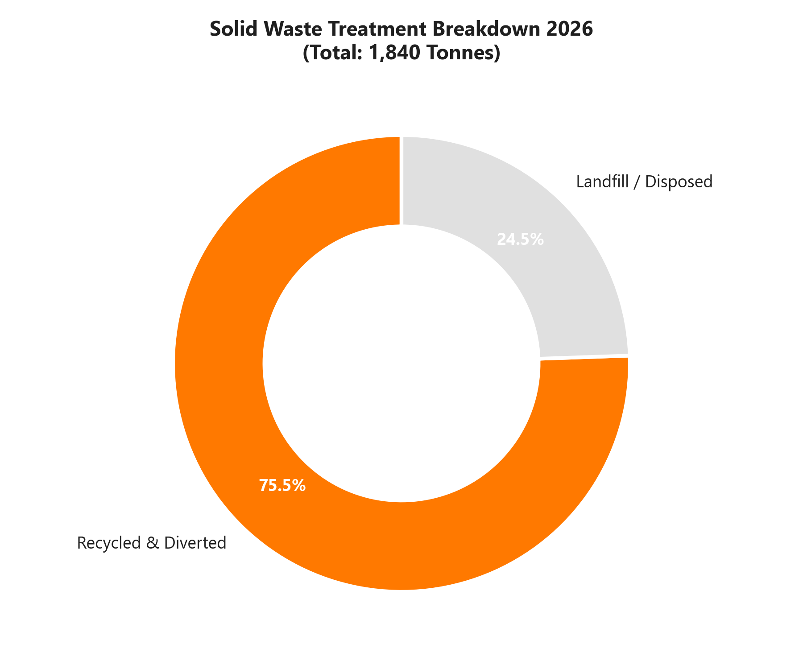
Many consumers discard old mobile phones, chargers, and accessories, leading to electronic waste containing toxic substances like lead, mercury, and cadmium. These materials can contaminate local soils and groundwater if placed in standard landfills.
Nova Connect Egypt launched the "From Old Devices to New Value" campaign, offering retail trade-in discounts on new devices in exchange for recycling old hardware. We partnered with local certified e-waste processors to recover copper, gold, and plastics.
In 2026, the program collected and recycled over 84,000 consumer devices and 420 tonnes of network e-waste, preventing material disposal in landfills and recovering valuable metals.
The table below details our environmental, energy, carbon, water, and waste indicators over the past three reporting years.
| Environmental Metric | Unit | 2024 | 2025 | 2026 | YoY Direction |
|---|---|---|---|---|---|
| Total Energy Consumption | MWh | 443,000 | 428,000 | 412,000 | ↓ Improvement |
| Renewable Energy Share | % | 43% | 48% | 54% | ↑ Improvement |
| Energy Intensity per Data Traffic | MWh / TB | 0.48 | 0.44 | 0.41 | ↓ Improvement |
| Scope 1 (Direct GHG) | tCO₂e | 48,000 | 45,000 | 42,000 | ↓ Improvement |
| Scope 2 (Indirect GHG) | tCO₂e | 115,000 | 106,000 | 98,000 | ↓ Improvement |
| Scope 3 (Supply Chain GHG) | tCO₂e | 53,700 | 50,300 | 46,400 | ↓ Improvement |
| Total GHG Emissions | tCO₂e | 216,700 | 201,300 | 186,400 | ↓ 7.4% (YoY) |
| Water Consumption | m³ | 101,000 | 98,000 | 96,000 | ↓ Improvement |
| Water Reused and Recycled | m³ | 18,200 | 19,600 | 21,500 | ↑ Improvement |
| Water Recycling Rate | % | 18% | 20% | 22% | ↑ Improvement |
| Total Solid Waste Generated | Tonnes | 1,960 | 1,910 | 1,840 | ↓ Improvement |
| Solid Waste Recycled/Diverted | Tonnes | 1,254 | 1,356 | 1,390 | ↑ Improvement |
| Solid Waste Recycling Rate | % | 64% | 71% | 75.5% | ↑ Improvement |
The table below details our progress against our long-term targets. We track performance against our 2024 baselines to confirm target alignment.
| Strategic Goal | KPI Metric | Baseline (2024) | 2026 Actual | 2030 Target | Current Status |
|---|---|---|---|---|---|
| Renewable Energy | Network grid integration share | 43% | 54% | 70% | On Track |
| Carbon Reductions | Scope 1 & 2 reduction from baseline | 0% (163k t) | 14% (140k t) | 50% (81.5k t) | On Track |
| Women Leadership | Women in manager levels & above | 32% | 38% | 45% | On Track |
| Solid Waste Recycling | Operations recycling rate | 64% | 75.5% | 90% | On Track |
| Digital Inclusion | Annual program beneficiaries | 120,000 | 184,000 | 300,000 | On Track |
| Ethics & Compliance | Employee Code training completion | 92% | 98% | 100% | On Track |
| Cybersecurity | Cyber staff training completion | 95% | 100% | 100% | Achieved |
| Supply Chain Screening | Active supplier ESG screenings | 68% | 87% | 95% | On Track |
To ensure consistency and comparability, Nova Connect Egypt compiles its ESG data in accordance with international frameworks and industry guidelines.
Our calculation methodologies include:
• Carbon Accounting: Scope 1 and Scope 2 greenhouse gas emissions are calculated using the GHG Protocol Corporate Standard. Emission factors for electricity are sourced from the Egyptian National Grid average emission factors.
• Scope 3 Emissions: Scope 3 calculations are based on the GHG Protocol Corporate Value Chain Standard, applying screening and supplier spend-based emission factors where actual vendor data is unavailable.
• Energy Consumption: Energy figures are aggregated from utility billing records and fuel purchase logs for generators.
Our ESG data is monitored by our Internal Audit team and recorded in our centralized carbon tracking system. No restatements of historical 2024 or 2025 figures were required during this reporting cycle.
We apply the operational control boundary approach, covering all offices, retail service centers, technical switching facilities, and cellular base towers owned or operated by Nova Connect Egypt S.A.E.
The table below details all primary environmental, climate, water, and waste parameters recorded by Nova Connect Egypt over the 2024-2026 timeframe.
| Disclosure Parameter | GRI Ref | Unit | 2024 | 2025 | 2026 |
|---|---|---|---|---|---|
| Direct Energy (Diesel fuel) | GRI 302-1 | MWh equivalent | 162,000 | 152,000 | 141,000 |
| Indirect Energy (Grid electricity) | GRI 302-1 | MWh | 281,000 | 276,000 | 271,000 |
| Total Energy Consumption | GRI 302-1 | MWh | 443,000 | 428,000 | 412,000 |
| Renewable Grid Share | GRI 302-1 | % | 43.0% | 48.0% | 54.0% |
| Direct Carbon (Scope 1) | GRI 305-1 | tCO₂e | 48,000 | 45,000 | 42,000 |
| Indirect Carbon (Scope 2) | GRI 305-2 | tCO₂e | 115,000 | 106,000 | 98,000 |
| Value Chain Carbon (Scope 3) | GRI 305-3 | tCO₂e | 53,700 | 50,300 | 46,400 |
| Total Carbon Emissions | GRI 305-1,2,3 | tCO₂e | 216,700 | 201,300 | 186,400 |
| Emissions Intensity | GRI 305-4 | tCO₂e / FTE | 47.9 | 42.7 | 38.4 |
| Water Consumption | GRI 303-3 | m³ | 101,000 | 98,000 | 96,000 |
| Water Reused | GRI 303-3 | m³ | 18,200 | 19,600 | 21,500 |
| Solid Waste Generated | GRI 306-3 | Tonnes | 1,960 | 1,910 | 1,840 |
| Solid Waste Recycled | GRI 306-4 | Tonnes | 1,254 | 1,356 | 1,390 |
The table below details all primary labor, employment, safety, diversity, and community investment parameters recorded by Nova Connect Egypt over the 2024-2026 timeframe.
| Disclosure Parameter | GRI Ref | Unit | 2024 | 2025 | 2026 |
|---|---|---|---|---|---|
| Total Workforce (FTE) | GRI 2-7 | Count | 4,520 | 4,710 | 4,850 |
| Gender Mix (Women) | GRI 405-1 | % | 38% | 40% | 43% |
| Women in Management | GRI 405-1 | % | 32% | 35% | 38% |
| Employees with Disabilities | GRI 405-1 | % | 2.2% | 2.5% | 2.7% |
| Average Training per Employee | GRI 404-1 | Hours | 18.5 | 20.2 | 22.4 |
| Total Training Investment | GRI 404-2 | EGP M | 12.4 | 14.8 | 17.2 |
| Employee Engagement Score | Internal | % | 83% | 85% | 87% |
| Employee Turnover Rate | GRI 401-1 | % | 9.1% | 8.6% | 8.2% |
| Lost-Time Injuries (LTIs) | GRI 403-9 | Count | 9 | 8 | 7 |
| Work-Related Fatalities | GRI 403-9 | Count | 0 | 0 | 0 |
| Community Investments | GRI 201-1 | EGP M | 78.0 | 85.5 | 96.0 |
| Community Beneficiaries | GRI 413-1 | Count | 324k | 361k | 412k |
The table below details our primary board composition, anti-corruption, cybersecurity, and supplier screening parameters recorded by Nova Connect Egypt over the 2024-2026 timeframe.
| Disclosure Parameter | GRI Ref | Unit | 2024 | 2025 | 2026 |
|---|---|---|---|---|---|
| Board Members Count | GRI 2-9 | Count | 11 | 11 | 11 |
| Independent Directors | GRI 2-9 | Count | 4 | 5 | 5 |
| Board Women Representation | GRI 2-9 | % | 18% | 27% | 27% |
| Board Meetings Held | GRI 2-12 | Count | 7 | 8 | 8 |
| Ethics Training Completion | GRI 205-2 | % | 92% | 95% | 98% |
| Compliance Audit Coverage | GRI 205-1 | % | 100% | 100% | 100% |
| Whistleblowing Cases Logged | GRI 2-26 | Count | 28 | 31 | 34 |
| Whistleblowing Cases Resolved | GRI 2-26 | Count | 27 | 29 | 32 |
| Security Incidents Recorded | GRI 418-1 | Count | 0 | 0 | 0 |
| Cybersecurity Staff Training | Internal | % | 95% | 98% | 100% |
| Suppliers Screened for ESG | GRI 308/414 | % | 68% | 78% | 87% |
Nova Connect Egypt reports in accordance with the GRI Standards for the period 1 January 2026 to 31 December 2026. This index serves as a reference guide to locate specific GRI disclosures.
| GRI Standard | Disclosure Description | Location / Disclosure Response | Page |
|---|---|---|---|
| GRI 2: General Disclosures (2021) | 2-1 Organizational details | Nova Connect Egypt S.A.E., Cairo, Egypt. | 06 |
| 2-2 Entities included in reporting | Nova Connect Egypt and operational subsidiaries. | 03 | |
| 2-3 Reporting period and contact | 1 Jan - 31 Dec 2026. esg@novaconnect.com.eg | 03 | |
| 2-4 Restatements of information | No historical data restatements. | 44 | |
| 2-5 External assurance | Independent limited assurance statement. | 51 | |
| 2-6 Activities, value chain, partners | Mobile data, voice, and financial services in Egypt. | 06 | |
| 2-7 Employees | 4,850 total full-time equivalent employees. | 27, 46 | |
| 2-9 Governance structure & composition | 11 Board members, 5 independent, 3 female. | 16, 47 | |
| 2-11 Chair of Board of Directors | Non-executive Board Chair. | 16 | |
| 2-12 Role in managing impacts | Board Sustainability & Risk Committee oversight. | 09, 16 |
Nova Connect Egypt reports in accordance with the GRI Standards for the period 1 January 2026 to 31 December 2026. This section details environmental disclosures.
| GRI Standard | Disclosure Description | Location / Disclosure Response | Page |
|---|---|---|---|
| GRI 3: Material Topics (2021) | 3-1 Process to determine topics | Materiality assessment, stakeholder surveys. | 11 |
| 3-2 List of material topics | 12 prioritized topics. | 11, 12 | |
| GRI 302: Energy (2016) | 302-1 Energy consumption within | Total energy: 412,000 MWh. Grid: 271,000 MWh. | 34, 45 |
| 302-3 Energy intensity | 0.41 MWh / Terabyte (TB) of data traffic. | 34, 42 | |
| 302-4 Reduction of energy use | 7% absolute reduction compared to 2025. | 34, 45 | |
| GRI 303: Water (2018) | 303-3 Water withdrawal | 96,000 m³ water consumption. | 39, 45 |
| GRI 305: Emissions (2016) | 305-1 Direct (Scope 1) emissions | 42,000 tCO₂e. | 36, 45 |
| 305-2 Indirect (Scope 2) emissions | 98,000 tCO₂e. | 36, 45 | |
| 305-3 Other indirect (Scope 3) | 46,400 tCO₂e. | 36, 45 | |
| 305-4 GHG emissions intensity | 38.4 tCO₂e per full-time employee. | 45 | |
| GRI 306: Waste (2020) | 306-3 Waste generated | Total waste: 1,840 tonnes. E-waste: 420 tonnes. | 40, 45 |
Nova Connect Egypt reports in accordance with the GRI Standards for the period 1 January 2026 to 31 December 2026. This section details social and governance disclosures.
| GRI Standard | Disclosure Description | Location / Disclosure Response | Page |
|---|---|---|---|
| GRI 308: Supplier Env (2016) | 308-1 New suppliers screened | 87% of suppliers screened for environmental criteria. | 19, 47 |
| GRI 401: Employment (2016) | 401-1 Employee hires and turnover | Turnover rate: 8.2% voluntary. | 27, 46 |
| GRI 403: OHS (2018) | 403-9 Work-related injuries | 7 LTIs recorded. Zero fatalities. | 30, 46 |
| GRI 404: Training (2016) | 404-1 Average training hours per staff | 22.4 average training hours per employee. | 29, 46 |
| 404-2 Programs for upgrading skills | Nova Training Portal and cloud network programs. | 29 | |
| GRI 405: Diversity (2016) | 405-1 Diversity of governance & staff | Workforce: 43% female. Board: 27% female. | 16, 28 |
| GRI 413: Communities (2016) | 413-1 Local community programs | Rural connectivity, digital centers, healthcare. | 22, 24 |
| GRI 414: Supplier Social (2016) | 414-1 New suppliers screened | 87% of suppliers screened for social criteria. | 19, 47 |
| GRI 418: Customer Privacy (2016) | 418-1 Substantiated complaints privacy | Zero data privacy incidents recorded in 2026. | 18, 47 |
IMPORTANT NOTICE: This is a fictional limited assurance statement prepared solely for illustrative purposes in this report. No actual external audit has been conducted by Sustainability Assurance Partners.
To the Board of Directors of Nova Connect Egypt:
We have been engaged by Nova Connect Egypt S.A.E. to perform an independent, limited assurance engagement on selected Environmental, Social, and Governance (ESG) performance indicators disclosed in the Nova Connect Egypt Annual ESG & Sustainability Report 2026 for the year ended 31 December 2026.
Assurance Scope and Indicators:
Our assurance scope was limited to the following key performance indicators for 2026:
• Total Energy Consumption (412,000 MWh) and Renewable Energy Share (54%)
• Scope 1 and Scope 2 Greenhouse Gas Emissions (140,000 tCO₂e combined)
• Total Solid Waste Generated (1,840 tonnes) and recycling rate (75.5%)
• Workforce Gender Representation (43% female) and average training hours (22.4 hours)
Assurance Standard Applied:
We conducted our engagement in accordance with the International Standard on Assurance Engagements (ISAE) 3000 (Revised), Assurance Engagements Other than Audits or Reviews of Historical Financial Information, issued by the International Auditing and Assurance Standards Board.
Conclusion:
Based on our procedures and the evidence obtained, nothing has come to our attention that causes us to believe that the selected ESG performance indicators for 2026 are not prepared, in all material respects, in accordance with the GRI Standards criteria.
Sustainability Assurance Partners S.A.
Cairo, Egypt Office
NOVA CONNECT EGYPT S.A.E.
Headquarters: Nile Towers, Corniche El Nil, Cairo, Egypt
Email: sustainability@novaconnect.com.eg
Website: www.novaconnect.com.eg/sustainability